Objetivos de Desarrollo Sostenible (ODS)
Introducción
Los 17 Objetivos de Desarrollo Sostenible (ODS) son una iniciativa de las Naciones Unidas creada para enfrentar los desafíos globales más apremiantes, como la pobreza, la desigualdad, el cambio climático, la degradación ambiental, la paz y la justicia.
Estos objetivos se establecieron en septiembre de 2015, durante la Asamblea General de la ONU, como una continuación de los Objetivos de Desarrollo del Milenio (ODM), que concluyeron en 2015. La creación de los ODS respondió a la necesidad urgente de abordar de manera integral los problemas sociales, económicos y ambientales que afectan al mundo, reconociendo que el desarrollo sostenible es fundamental para la prosperidad y el bienestar de todos.
Los ODS forman parte de la Agenda 2030, un plan de acción global que establece metas claras para que todos los países trabajen juntos en la consecución de un futuro sostenible.
La Agenda 2030 tiene como objetivo lograr un equilibrio entre el crecimiento económico, la inclusión social y la protección del medio ambiente, asegurando que las generaciones presentes y futuras puedan vivir en un mundo más justo, seguro y saludable.
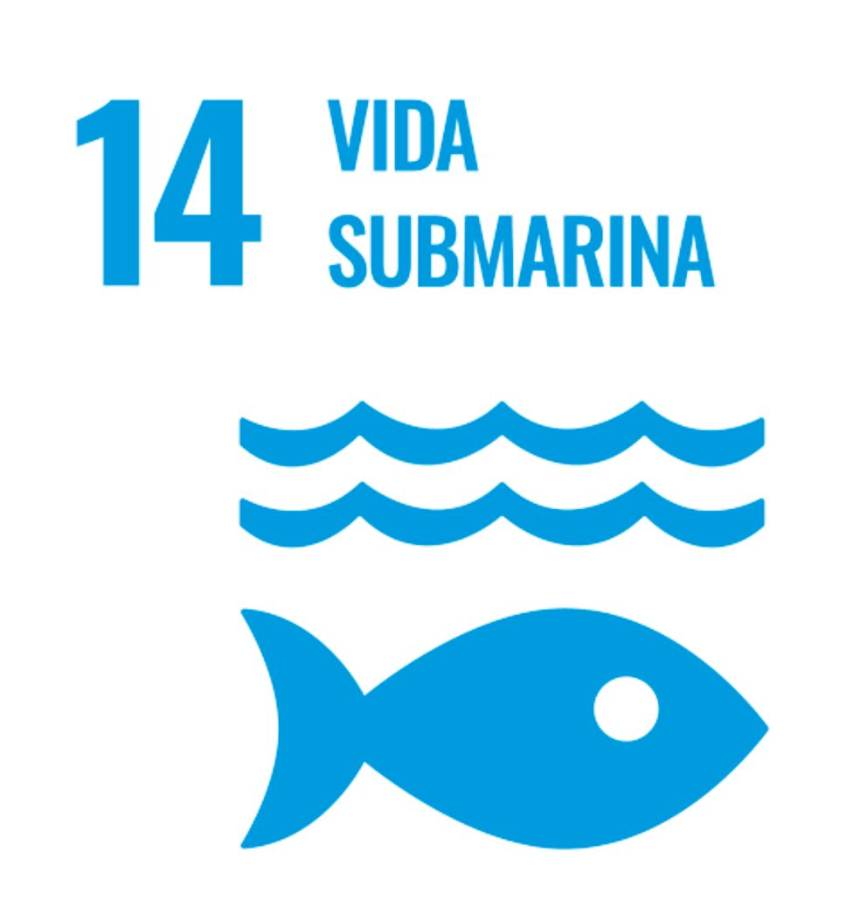
Objetivo 14: Vida Submarina
El Objetivo 14 busca conservar y utilizar de manera sostenible los océanos, mares y recursos marinos. México, al tener vastas costas, enfrenta importantes desafíos en la preservación de sus ecosistemas marinos.
Investigaciones destacadas:
- Dra. Patricia M. Alarcón: Investigadora del Instituto de Ciencias del Mar y Limnología de la UNAM, ha trabajado en la reducción de la contaminación marina mediante la eliminación de plásticos y microplásticos en el Golfo de México. Su investigación muestra cómo la disminución de contaminantes mejora la biodiversidad marina y ayuda a mantener ecosistemas saludables, contribuyendo a las metas del Objetivo 14.
- Enrique Martínez Saldívar: Ha investigado cómo la sobrepesca en el Golfo de California afecta a la biodiversidad marina y a las comunidades locales. Describe cómo su trabajo sugiere métodos sostenibles de pesca que podrían ayudar a proteger especies marinas y fomentar prácticas pesqueras responsables.
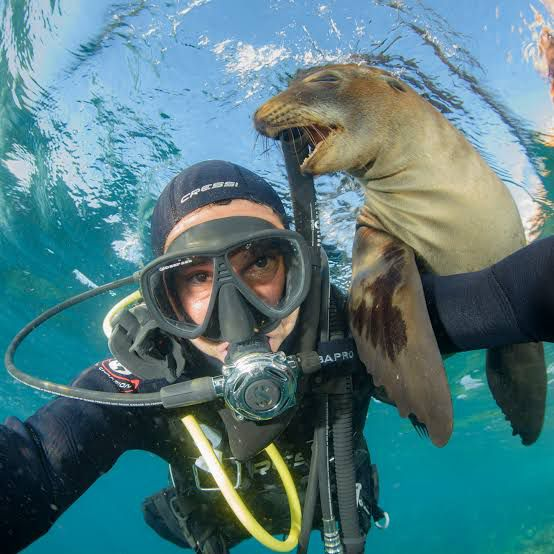
- Octavio Aburto Oropeza: Ha documentado los beneficios de las áreas marinas protegidas en la conservación de especies y la regeneración de hábitats críticos. Explica cómo su investigación en Cabo Pulmo muestra que las áreas protegidas pueden ser una solución eficaz para cumplir con el Objetivo 14.
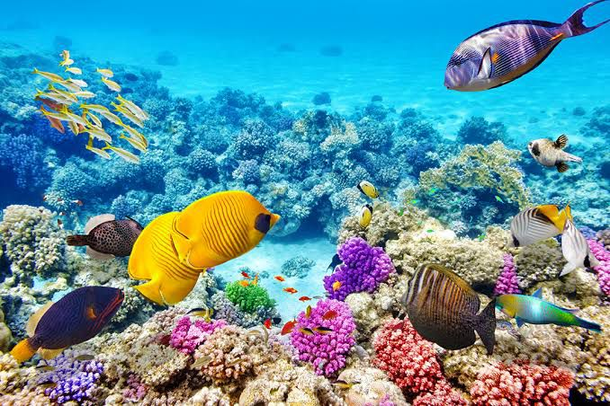
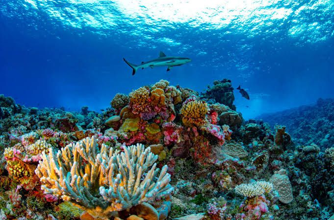
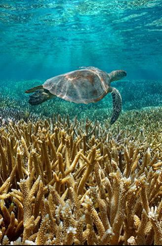
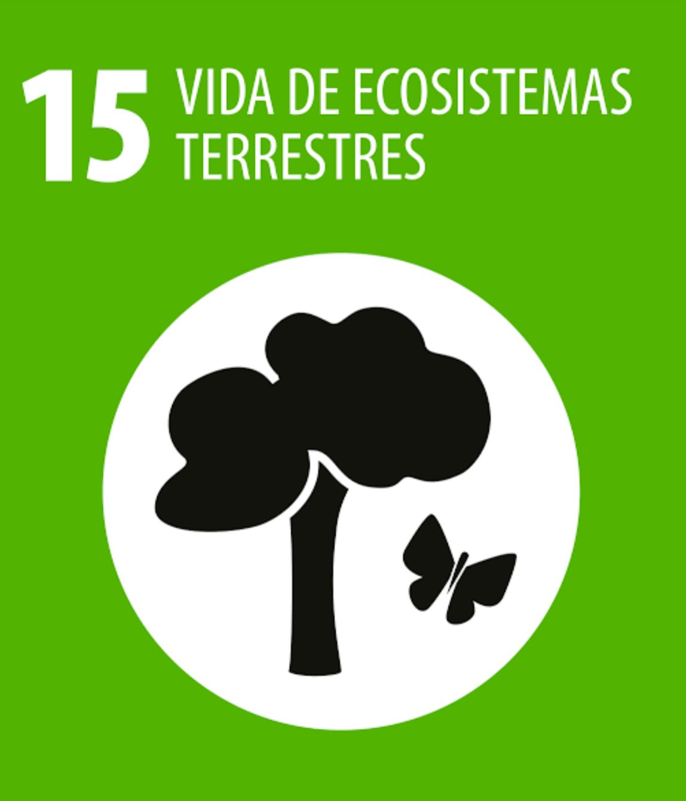
Objetivo 15: Vida de Ecosistemas Terrestres
El Objetivo 15 se enfoca en proteger, restaurar y promover el uso sostenible de los ecosistemas terrestres.
Investigaciones destacadas:
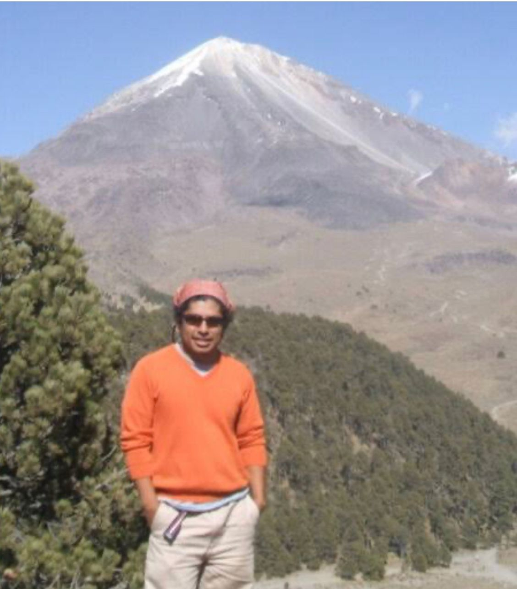
- Dr. José Luis Aguilar: especialista en restauración de bosques del Instituto Nacional de Ecología y Cambio Climático, ha desarrollado programas de reforestación en áreas afectadas por la deforestación en la Sierra Madre Occidental. Su investigación demuestra que la restauración de estos ecosistemas es clave para reducir la desertificación y conservar la biodiversidad, elementos esenciales para alcanzar las metas del Objetivo 15.
- Julia Carabias Lillo: Ha trabajado en proyectos de conservación en la Selva Lacandona, analizando cómo la gestión sostenible de la tierra y la reforestación pueden ayudar a preservar especies en peligro. Describe sus enfoques en ecología y sostenibilidad.
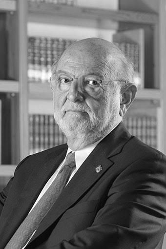
- José Sarukhán: Con su trabajo en la Comisión Nacional para el Conocimiento y Uso de la Biodiversidad (CONABIO), ha resaltado la importancia de inventarios de especies y la reforestación para la conservación de la biodiversidad. Explica cómo estos proyectos son clave para alcanzar el ODS 15 en México.
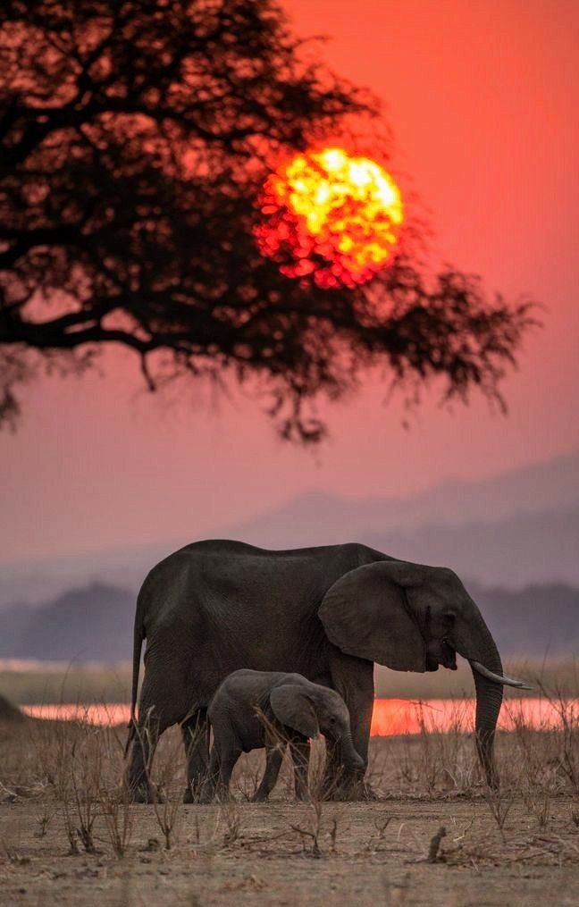
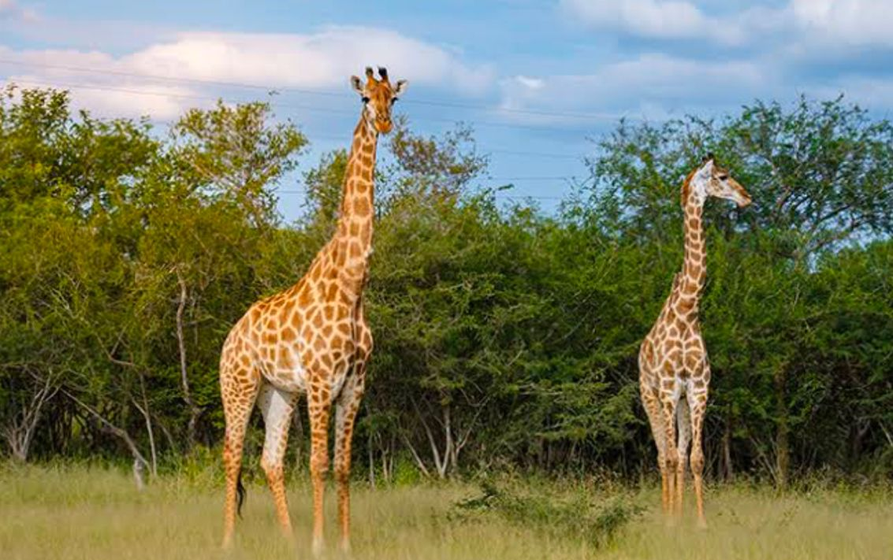
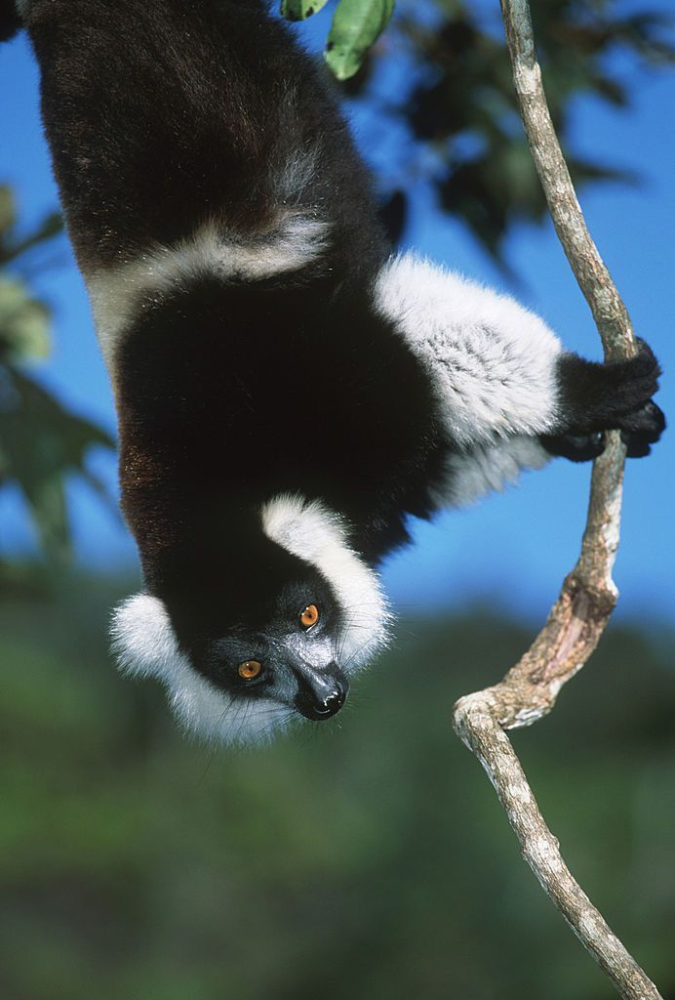
Estas investigaciones, llevadas a cabo por científicos mexicanos, subrayan el papel crucial de la ciencia local en la protección y sostenibilidad de los recursos naturales en México. A través de su trabajo, el país se acerca cada vez más al cumplimiento de las metas de los ODS 14 y 15, garantizando un ambiente sostenible para las futuras generaciones.
Citas de Fuentes Confiables
- Alarcón, P. M., & Instituto de Ciencias del Mar y Limnología UNAM. (2022). Microplásticos en el Golfo de México y sus efectos en la biodiversidad marina. Obtenido de UNAM.
- Instituto Nacional de Ecología y Cambio Climático (INECC). (2020). Adaptación y mitigación ante el cambio climático en México: Reforestación y conservación de ecosistemas terrestres. Obtenido de https://cambioclimatico.gob.mx/
- Revista Ecoguia. (2021). Sardinas del golfo de California, en peligro por sobrepesca. Recuperado de https://www.revistaecoguia.com
- Gobierno de México. (2024). Estudios científicos descartan sobreexplotación de sardina en el Golfo de California. Recuperado de https://www.gob.mx
- Sarukhán, J. (2022). CONABIO: Biodiversidad Mexicana. Recuperado de https://www.biodiversidad.gob.mx
- Carabias Lillo, J. (2017). Julia Carabias por la conservación de los ecosistemas en México. Recuperado de https://www.ceiba.org.mx